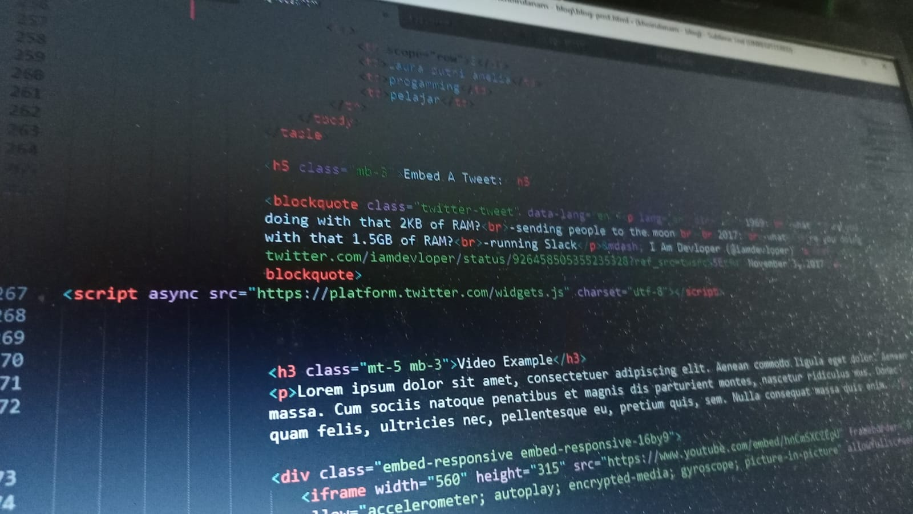

Blog

Bahasa Pemograman
Published on July 30, 2023
Apa itu Bahasa Pemograman?
Bahasa pemrograman adalah alat komunikasi yang digunakan programmer untuk memberikan instruksi kepada komputer. Tujuannya, agar dapat membuat program sesuai perintah yang dituliskan.

Apa itu HTML?
Published on July 28, 2023
HTML adalah bahasa markup standar untuk membuat halaman website. Bahasa ini berfungsi untuk membuat struktur website hingga menyusun format teks dan gambar pada halaman web.